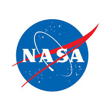
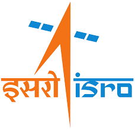
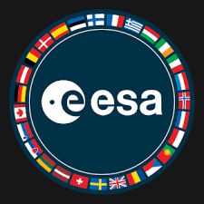
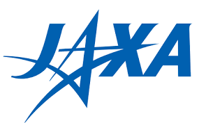

Welcome to the History of Space Exploration
Space exploration has fascinated mankind for centuries. This website takes you through a journey from the early missions to the future of space travel.
Explore each section to learn about different milestones and programs that have shaped the exploration of space:
- Early Space Missions: The first steps into the cosmos began with the launch of Sputnik by the Soviet Union in 1957.
- Human Spaceflight: In 1961, Yuri Gagarin became the first human to orbit Earth, marking a significant milestone in space exploration.
- Moon Landing: The Apollo 11 mission in 1969 saw humans land on the Moon for the first time.
- Space Stations: The establishment of space stations like the International Space Station (ISS) has enabled long-term human presence in space.
- Robotic Exploration: Missions to Mars, Venus, and beyond have provided invaluable data about our solar system.
- Future Missions: Plans for Mars exploration and beyond promise to unlock even more mysteries of the universe.
Space Research Organizations

NASA (National Aeronautics and Space Administration) is the United States government agency responsible for the nation's civilian space program and for aeronautics and aerospace research.

ISRO (Indian Space Research Organisation) is the space agency of the Government of India, dedicated to the development of space technology and its application for national development.

ESA (European Space Agency) is an intergovernmental organization dedicated to the exploration of space, with various member countries working together on various missions.

JAXA (Japan Aerospace Exploration Agency) is responsible for space and planetary research, satellite development, and international collaboration in space exploration.